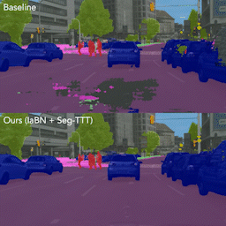

|
I am a recent Computational Engineering graduate from Technical University Darmstadt supervised by Robin Hesse and Prof. Stefan Roth. In my study I focused on deep learning and computer vision and worked as a student research assistant at the Visual Inference Lab supervised by Nikita Araslanov and Prof. Stefan Roth. I will be joining Prof. Radu Timofte's Computer Vision Lab at JMU Würzburg in August 2022. I received a Bachelor in Mechanical Engineering with a focus on mechatronics and automotive engineering from TU Darmstadt. Email / Twitter / Google Scholar / LinkedIn |

|
|
I am interested in deep learning for computer vision and machine learning. |
|  |
Sherwin Bahmani*, Oliver Hahn*, Eduard Zamfir*, Nikita Araslanov, Daniel Cremers Stefan Roth Under review |
|
Website source code by Jon Barron. |